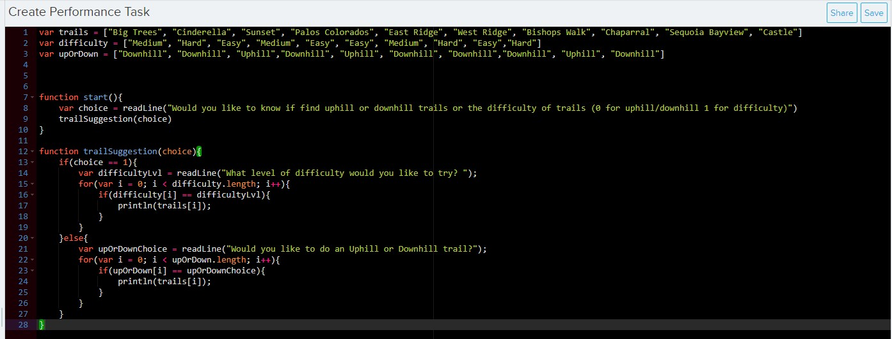

| 
CREATE TASK: The project I created for the create portion of the ap test. To create this I needed to create a code segment that satisfied all the requirements from the college board as well and producing a write up about the code. Some of these included, iteration (repeating), an array (a list) and selection. Suprisinly I learned quite a bit doing this project, I spent a lot more time actually planning what I was going to do rather and just starting coding and dealing with it later and it helped a lot. My code ended up being a lot shorter and with less unnecessary complexity which resulted in an easier and smoother experience as well as making the write up much easier. |
|
ISEARCH: The ISearch was a big research project that every freshman had to do that lasted multiple months. I decided to do mine on psilocybin mushrooms, basically just magic mushrooms that you trip on, but in the context of how they could be used medically, which actually goes a lot deeper than you'd think. I had never known anything about psilocybin mushrooms in gerneral which is enough to write a whole paper on its own, but within the context of medicine it gets so much more interesting. It's almost a miricle drug, for example, cancer patients do psilocybin therapy which helps to get them over their fear of death which has amazing results. This project expanded my knowledge and worldview greatly. |